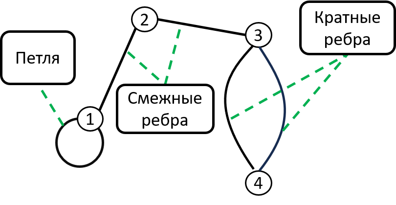
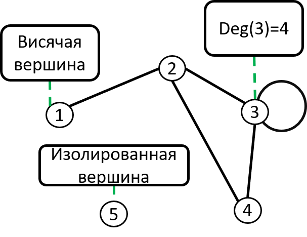
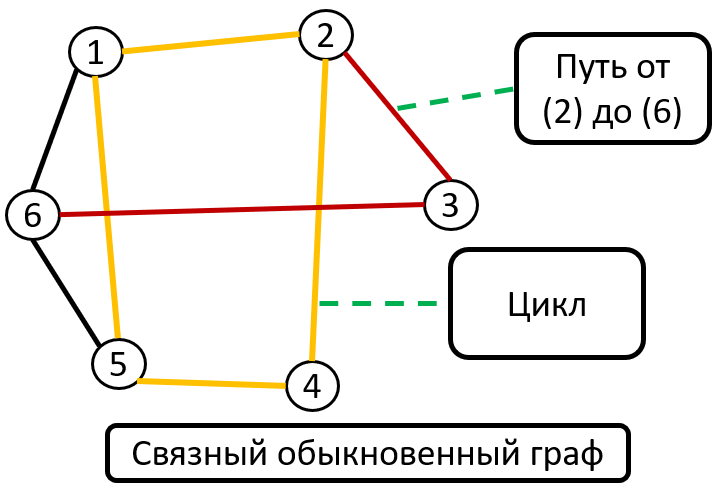
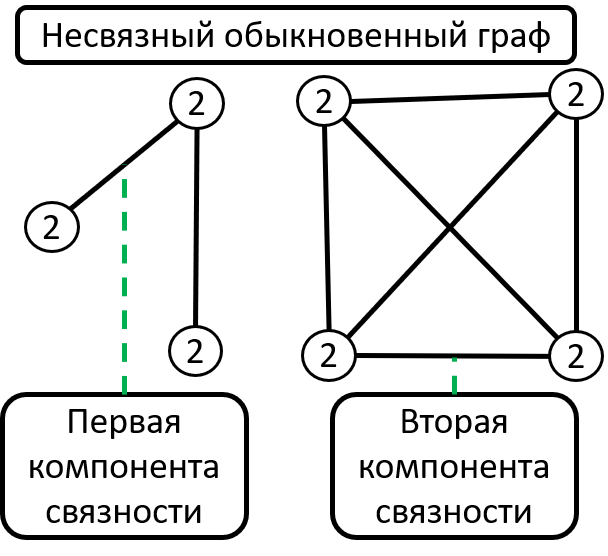
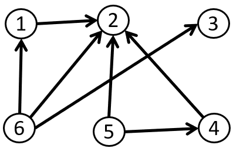
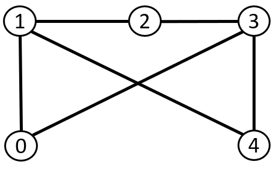
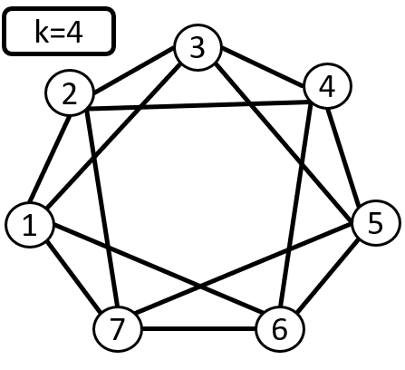
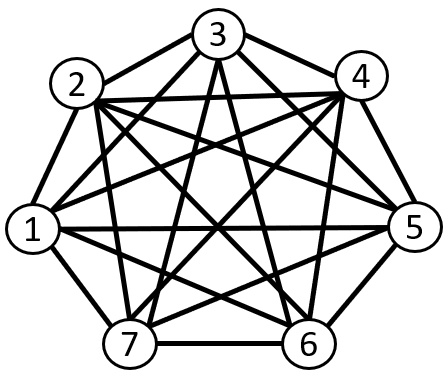
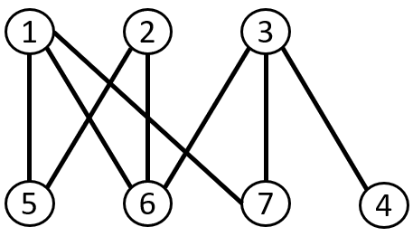
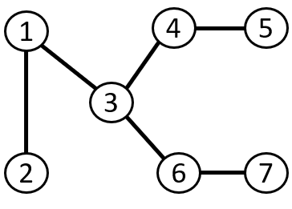

Основные понятия. Виды графов |
|||||
| Главная | Основные понятия Виды графов |
Способы объявления | DFS | BFS | Доп.информация |
|
 Два ребра называются смежными, если у них есть общая вершина. Два ребра называются кратными, если они соединяют одну и ту же пару вершин. Ребро называется петлей, если его концы совпадают.  Степенью вершины (deg) называют количество ребер, для которых она является концевой (петли считают дважды). Вершина называется изолированной, если она не является концом ни для одного ребра.
Вершина называется висячей, если из неё выходит ровно одно ребро.
Граф без кратных ребер и петель называется обыкновенным  Путем или цепью в графе называют конечную последовательность вершин, в которой каждая вершина (кроме последней) соединена со следующей в последовательности вершин ребром.
Циклом называют путь, в котором первая и последняя вершины совпадают.
Путь или цикл называют простым, если ребра в нем не повторяются.  Если в графе любые две вершины соединены путем, то такой граф называется связным. Можно рассмотреть такое подмножество вершин графа, что каждые две вершины этого подмножества соединены путем, а никакая другая вершина не соединена ни с какой вершиной этого подмножества. Каждое такое подмножество, вместе со всеми ребрами исходного графа, соединяющими вершины этого подмножества, называется компонентой связности. |
|||||
Виды графов ОреинтированныйГрафы, в которых порядок двух концов ребра графа существенен, называются ориентированными графами или орграфами.  НеореинтированныйГрафы, в которых все ребра являются звеньями, то есть порядок двух концов ребра графа не существенен, называются неориентированными. СмешанныйСмешанным называют граф, в котором есть ребра хотя бы двух из упомянутых трех разновидностей (звенья, дуги, петли).  РегулярныйРегулярным графом называется связный граф, все вершины которого имеют одинаковую степень k.  ПолныйГраф называют полным, если он содержит все возможные для этого типа рёбра при неизменном множестве вершин. Так, в полном обыкновенном графе каждая пара различных вершин соединена ровно одним звеном.  ДвудольныйГраф называется двудольным, если множество его вершин можно разбить на два подмножества так, чтобы никакое ребро не соединяло вершины одного и того же подмножества.  ДеревоДеревом называется связный граф без циклов. Любые две вершины дерева соединены лишь одним маршрутом. В дереве число вершин на 1 больше числа ребер. |
|||||